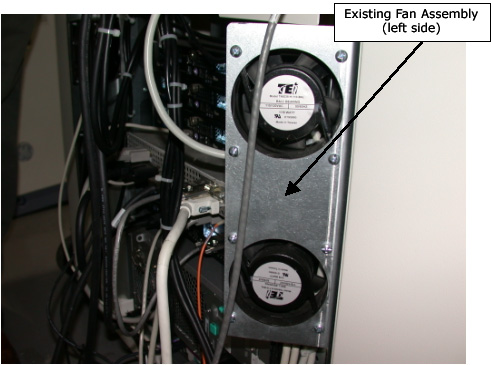
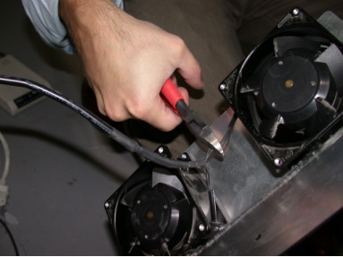
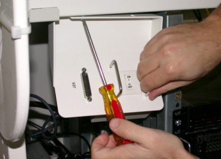
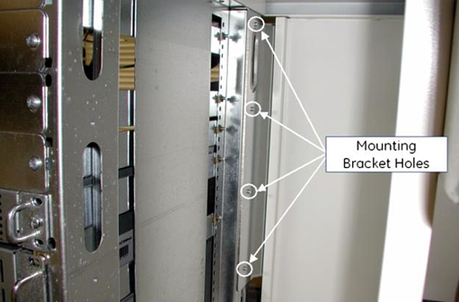
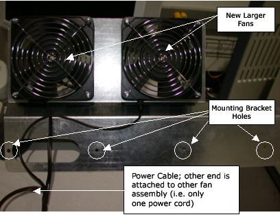
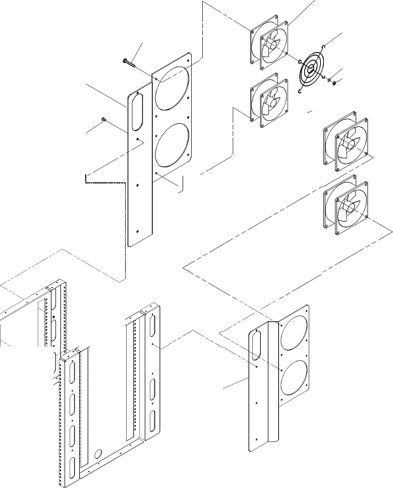
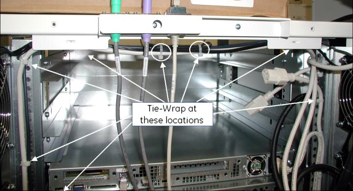

Operating Documentation
Direction 5193855-800, Rev# 4
LS 5.X RT Ltd. Access Service Information Adv
Operating Documentation |
| Last Revised: | 21 December 2006 |
When a DARC2 Node replaces the DARC Node on a GOC3 Console, the rear fan subassemblies need to be upgraded to the GOC4 left and right fan subassemblies that deliver more cooling to the console.
The GOC3 fan assembly is rated for 11/9 watts.
The GOC4 fan assembly is rated for 15/13 watts.
| POTENTIAL FOR ELECTRIC SHOCK. | |
| OPERATOR CONSOLE CONTAINS HAZARDOUS VOLTAGES. | |
| Observe proper Lockout/tagout procedures. |
Unplug the two fan power cables from J15 and J16 on the power distribution outlet box inside the Operator Console.
Snip all tie-wraps securing the fan assembly power cables for left and right power wires. From the rear view of the console, the left fan assembly has three tie-wraps and right fan assembly has four.
Illustration 1: Existing Fan Assembly

From the front of the console reach into the right side of the console, remove and retain the four screws that are securing the fan assembly.
Snip any remaining tie-wraps that are securing the fan assembly power cables.
Snip power wires to the fan assembly as shown in Illustration 2.
Illustration 2: Power Wires to the Fan Assembly

Discard the Fan Assembly.
From the front of the console pull the power cord out of the console and discard.
If your system has three IGs temporarily remove the top two to gain access to the left side fan assembly screws. Follow the GRE IG Parts replacement procedures, if necessary.
To gain access to the left side fan assembly screws remove the Console power switch assembly. See Illustration 3.
Illustration 3: Front Panel Switch

From the front of the console reach into the left side of the console remove and retain the four screws that are securing the fan assembly.
| NOTE: | You may need a snub nose Phillips screwdriver to remove the lower screw. |
Snip power wires to the fan assembly. See Illustration 2.
Discard the removed fan assembly.
From the front of the console pull the power cord out of the console and discard.
From the rear of the console, align the right-side fan mounting bracket with the chassis holes and prop in place using tie-wraps, or other means.
From the front of the console, reach into the right-side of the console. Using the screws retained from the old fan removal, attach the new fan assembly using the four mounting bracket holes pointed out in Illustration 4.
Illustration 4: Mounting Bracket

Align the left-hand side fan mounting bracket with the chassis holes and prop in place using tie wraps, or other means.
From the front of the console, reach into the left-side of the console, and using the screws retained from the old fan removal, attach the new fan assembly using the four holes pointed out in Illustration 5.
Illustration 5: Fan Assembly

Attach each fan to the mounting brackets as shown in Illustration 6.
Illustration 6: Mount Fans to Bracket

Attach the finger guards to each fan.
From the rear of the console, thread the left-side fan assembly cable behind the existing cables (e.g. network, power).
Run the fan power cable through the left-side of the console up to the power outlet box.
Tie-wrap the rear power cables down neatly to other cables as shown in Illustration 7. Fold the power cable at the middle, to remove excess slack in the cable.
Illustration 7: Tie-Wrap Fan Power Cable

When upgrade is complete, attach the new rear access cover for the console.